1
Every card has the same three exits
Someone from billing and a tech lead read the same card differently. Info, alert and AI sit in the same corner of every metric, so neither has to learn a new layout per tab.
Mercado Libre, internal developer platform
Fury is the platform under Mercado Libre, where its engineers build, deploy and run the services behind the marketplace and Mercado Pago. Each part of it belongs to a different team. From 2024 to 2026 I designed across them, and every project meant learning a new field first.
Context
As Mercado Libre grew, its engineers needed infrastructure that kept up and fewer steps between writing code and running it. They built Fury for that in 2015: one place to create, deploy, connect to the cloud and monitor applications.
It started as separate tools, one per need, and over time they were unified into a single Fury for the whole company. Once everyone was using the same platform, it needed a design point of view, so a design team was formed inside Internal Tools. When I joined in 2024, that team was already running.
Fury is now also offered to other companies as a modular product: they subscribe to the features they need instead of the whole platform. I worked on that version as well, so every decision had to hold for engineers inside Mercado Libre and for clients outside it.
Mercado Libre’s internal structure is huge and deeply technical. Each new project came with a new team and its own vocabulary, so it felt like changing industries every month. These are the fields I had to learn, and where each one appears below.
How work arrived
Ideas came from engineering leadership and were built by development squads. When a feature needed experience and visual work, the squad sent a ticket to the Fury design team, and our design manager assigned it. From there it was mine.
About a month per project, sometimes two at once. The last four modules were mine on every one of them.
Arriving after the code changed how I started. The first version on screen showed what the engineers assumed about the task, so I read it as research before proposing anything.
AI shortened the learning curve. I used Gemini to synthesize long technical RFCs before each kickoff, and AI workflows to prototype faster. Design alignment time dropped by 30%.
Field 1: data, AI and cloud cost
Analytics is a feature inside Fury where engineers, HR, billing and company executives look at how the company builds software and what it costs. The work was a dashboard of data visualizations where people can cross parameters, and then a way for AI to help read them.
1
Someone from billing and a tech lead read the same card differently. Info, alert and AI sit in the same corner of every metric, so neither has to learn a new layout per tab.
2
A build count alone says little. The detail view plots the team’s value against Mercado Libre’s, and lets people regroup by application, strategy or time.
3
Together with the team, we proposed letting AI combine two metrics into one rate, rate it against the target and recommend where to look. If the cloud budget climbs month after month, it points to the part driving it.
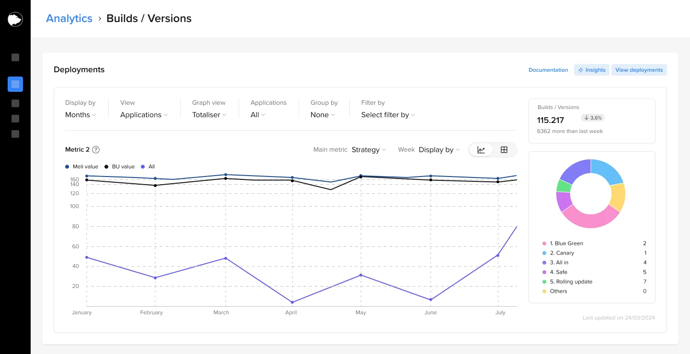
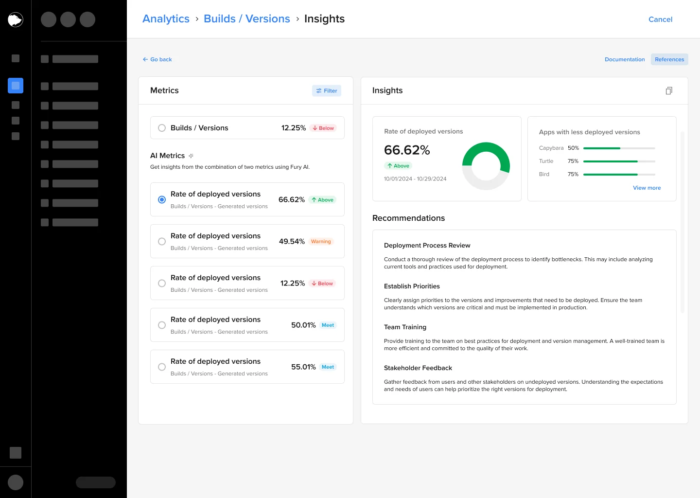
Field 2: software delivery
A pipeline is the sequence that takes a new version to production: deploy, wait, move traffic, and roll back if something fails. Engineers build it once and run it many times, so the work covered the whole life of a pipeline, including the moment it breaks.
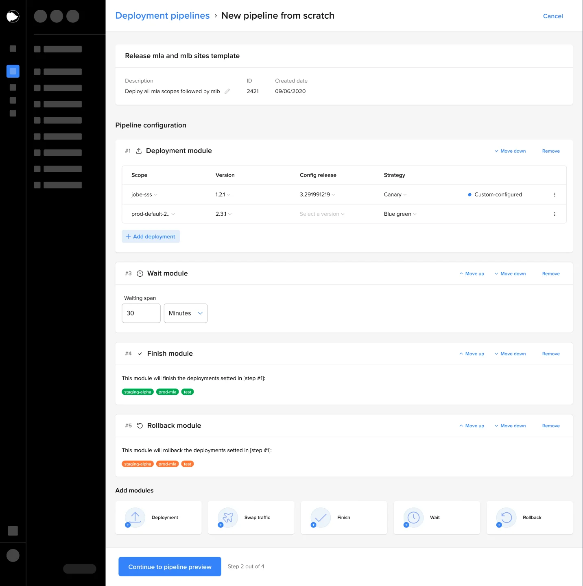
Deploy, wait, swap traffic, finish and roll back are modules. Teams stack them in order and add new ones from the row at the bottom.
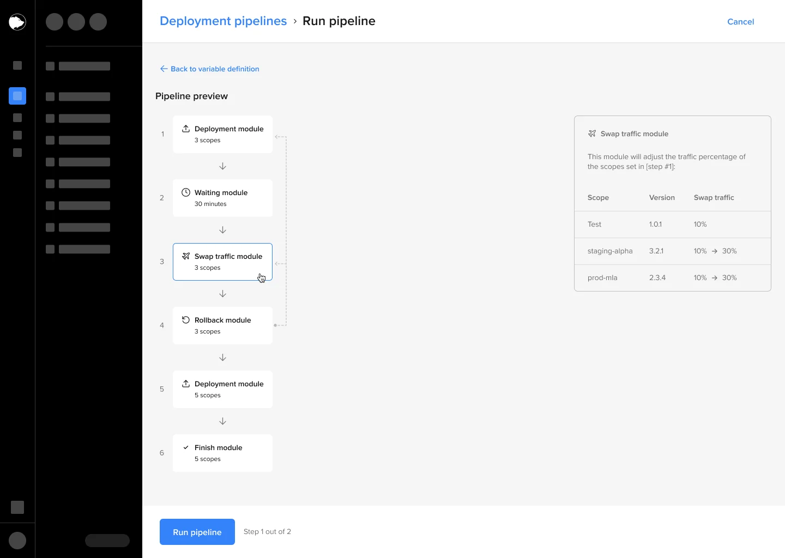
Before anything runs, the whole sequence is visible, and each module opens its details, such as how much traffic moves to each scope.
During and after a run, each module lists its scopes with version, strategy and status.
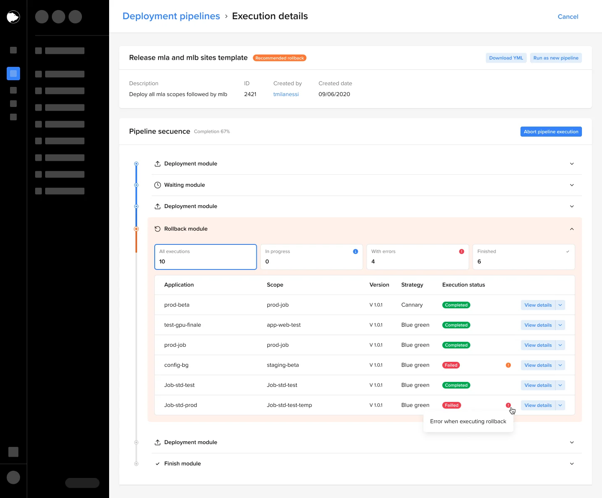
When a step fails, the error shows in the scope that failed, inside the module where it happened.
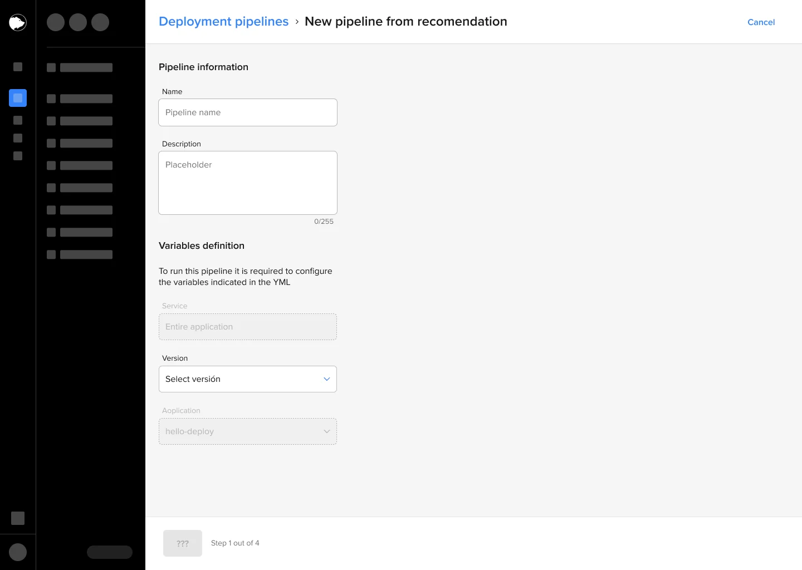
Fury reads the scopes of the selected app and suggests a pipeline, so teams only fill in what changes.
Field 3: multi-country infrastructure
Mercado Libre runs in many countries and through several companies, and the same service often needs different settings in each. The platform team defined how to split services by segment, such as Argentina, Brazil, Mex Bank or Non prod. My part was the execution: making that model usable in Key Value Store, BigQueue and traffic authorizations.
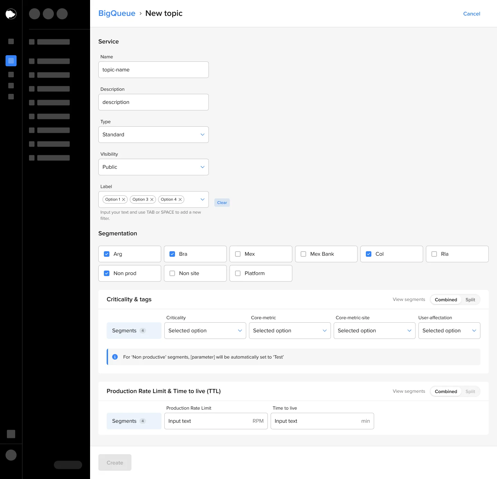
[service-name]-[segment]
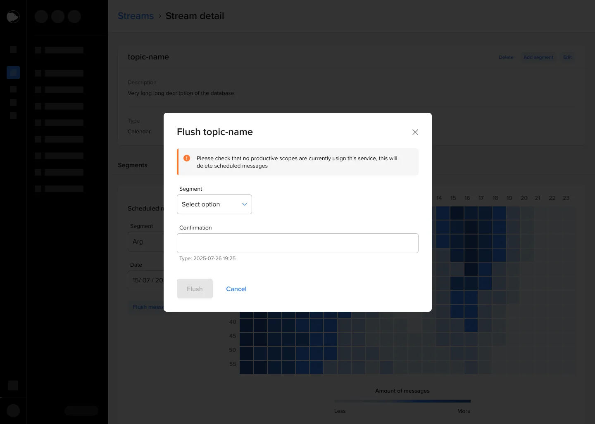
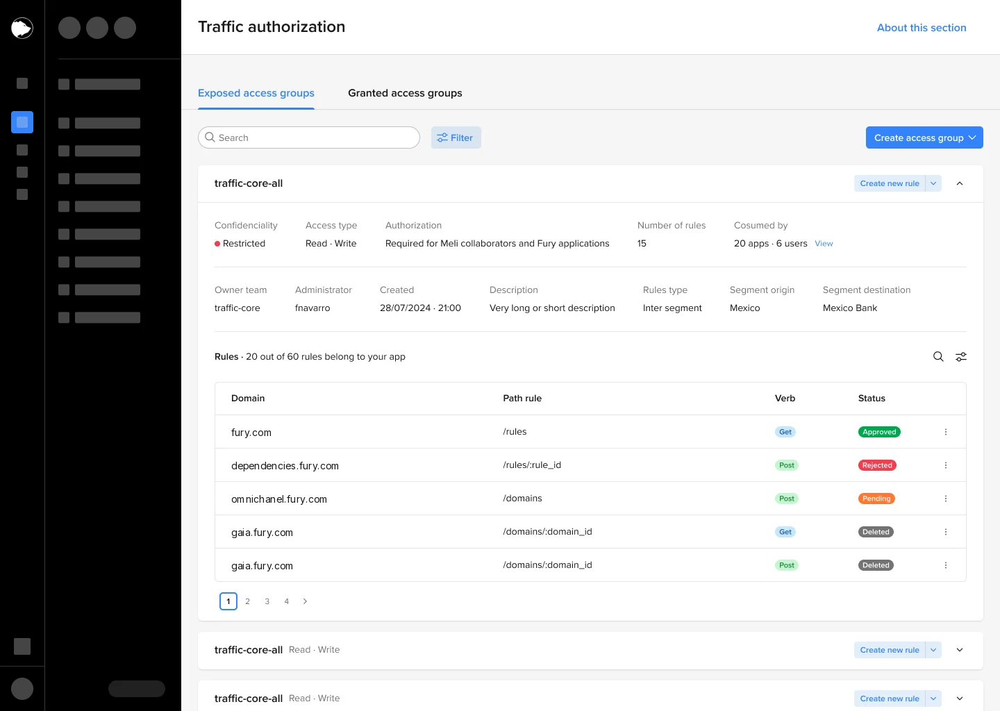
Field 4: the platform itself
Fury grew one tool at a time, built by different squads, and it showed. A teammate audited the empty states of 39 screens across 16 sections. The same moment had a different layout, illustration and tone in almost every one.
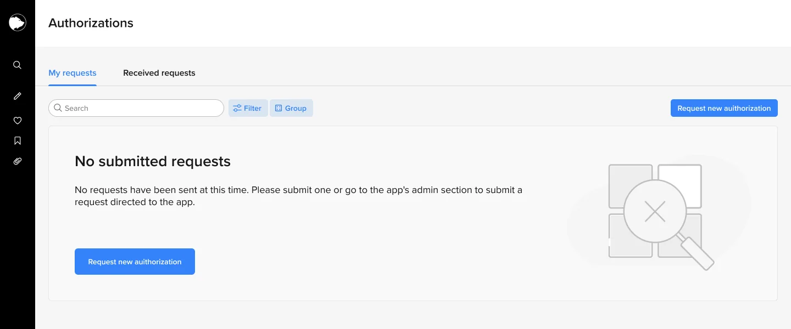
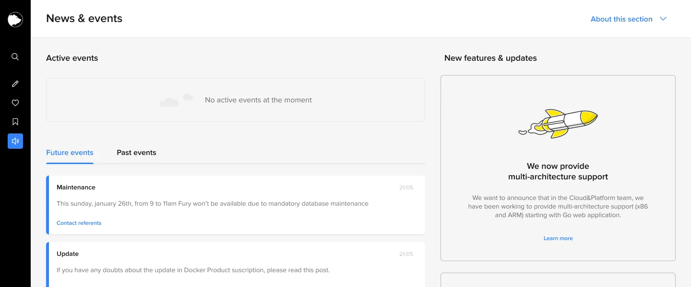
The audit became a single empty state component in Scotia, in four sizes, so every section says “nothing here” the same way.
Handoff
Projects lasted about a month and the next one often started right away, so each handoff had to stand on its own. Whoever picked up the work, a developer or the next designer, could continue without having to find me first.
How that part of the system works, the vocabulary of the team and the technical limits that shaped the design.
Flows, states and specs for development, with the reasoning behind each decision and the reusable pieces marked as such.
Open questions, ideas left out of scope and what QA found after release, so nothing depended on my memory.
Components that other projects could use went into Scotia, our team’s library on top of Andes, Mercado Libre’s design system. I didn’t create Scotia; I kept it in step with Andes and added what my projects needed, like these two charts from Analytics.
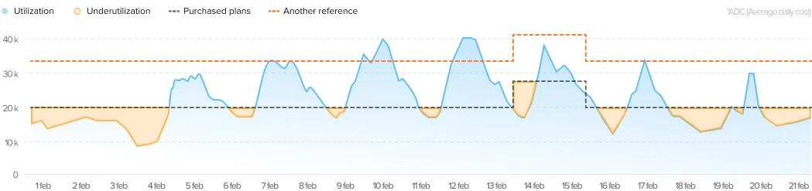
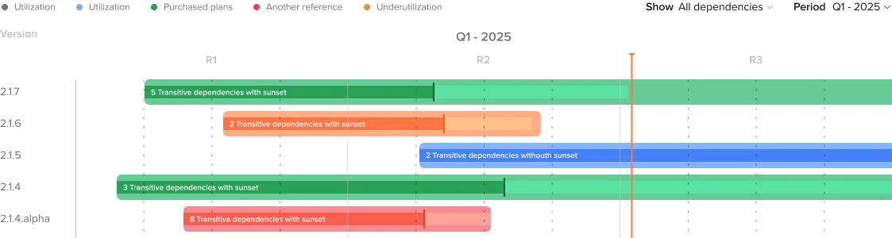
Understanding the system took longer than designing for it. In two years I learned a lot about cloud, infrastructure, billing, AI and software development, because each team needed me to understand how its part of Mercado Libre works before my proposals were useful.
Platform work rarely ends with one metric to show. What I can point to is the path each project followed: a kickoff with the developers, a design built from what already existed, a handoff the next person could reuse, and QA on what actually shipped.